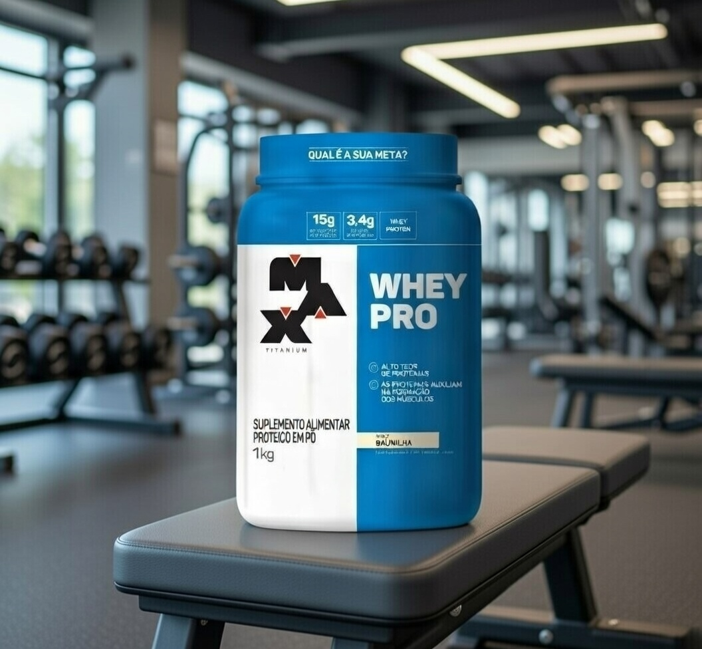

Whey Pro Max Titanium: O Aliado Perfeito para sua Evolução Muscular
Por Equipe AchadoCerto.VIP | Suplementação & Performance

Se você leva seus treinos a sério, sabe que a proteína é o "tijolo" que constrói seus músculos. O Whey Pro da Max Titanium não é apenas mais um suplemento; é uma ferramenta estratégica desenvolvida para quem busca resultados reais sem abrir mão do custo-benefício.
Por que escolher o Whey Pro?
Diferente de outros suplementos que focam apenas no marketing, a Max Titanium entrega uma fórmula equilibrada. Com 15g de proteína concentrada do soro do leite (WPC) por porção, ele garante o aporte necessário de aminoácidos essenciais para a síntese proteica imediata após o treino.
O grande diferencial está no perfil de aminoácidos: são 3,4g de BCAA (Leucina, Isoleucina e Valina), fundamentais para reduzir a fadiga muscular e acelerar a recuperação, permitindo que você mantenha a intensidade nos treinos seguintes.
🎯 Achado VIP: Whey Pro 1kg
O suplemento mais vendido com o selo de aprovação AchadoCerto.VIP!
APROVEITAR OFERTA NO MERCADO LIVRECOMPRA GARANTIDA | LOJA OFICIAL | ESTOQUE FULL
Sabor e Versatilidade
Muitos atletas desistem da suplementação pelo sabor enjoativo. O Whey Pro resolve isso com uma textura leve e sabores que realmente agradam. O de Baunilha, em especial, é o favorito por ser neutro o suficiente para misturar com frutas, iogurtes ou até mesmo criar aquele mingau proteico perfeito para o pré ou pós-treino.
Benefícios que você sente na prática:
- Recuperação Acelerada: Menos dores musculares no dia seguinte.
- Manutenção de Massa Magra: Evita o catabolismo durante dietas restritivas.
- Praticidade: Dilui instantaneamente, sem formar grumos.
- Segurança Nutricional: Produto testado e aprovado pelos órgãos reguladores.
Dica VIP: Para melhores resultados, consuma logo após o treino ou conforme a orientação do seu nutricionista para bater sua meta proteica diária.